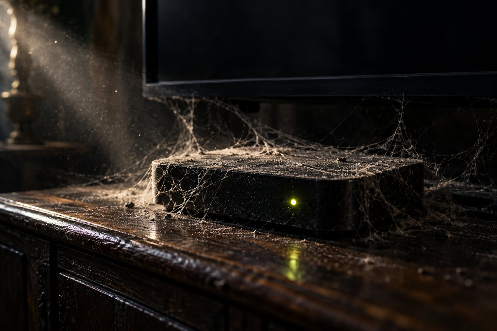
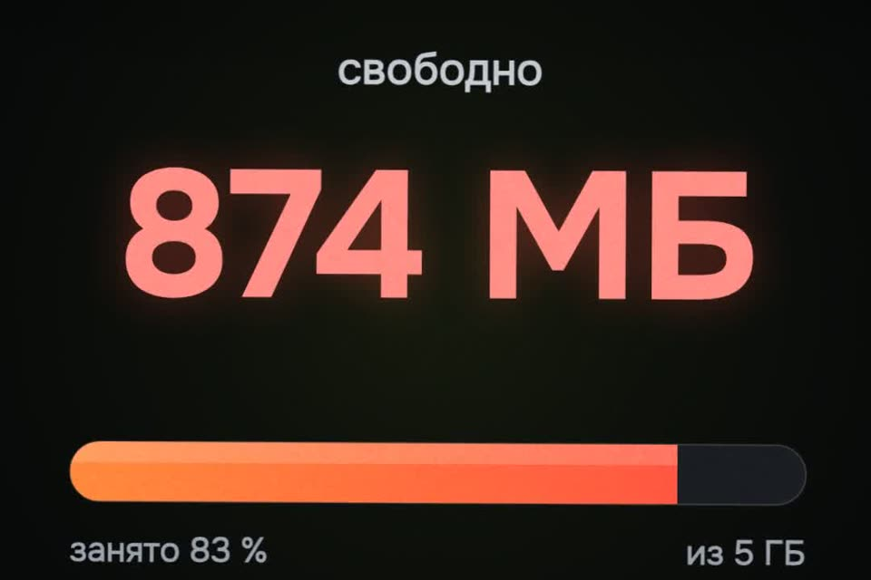

Приставка тормозит не от старости
Обещанные промпт и инструкция. Сначала пять минут без всякого ИИ. Если не помогло, дальше Claude Code почистит приставку сам и спросит перед каждым шагом.
- бесплатно
- ничего не удаляется
- всё откатывается
- логины остаются
К ролику «Приставка тормозит не от старости» · обновлено 27 октября 2026

Нужен Claude Code (или Codex) на ноутбуке: обычный чат в браузере до приставки не дотянется. Samsung (Tizen) и LG (webOS) не подходят, у них внутри не Android.
Первый результат за 3 шага

Сначала без Claude, 5 минут
Часть тормозов уходит уже здесь.
- Перезагрузка из розетки. Кнопка на пульте обычно не выключает приставку, а переводит в ожидание. Выдерните блок питания на 1–2 минуты и включите обратно. Приставки месяцами работают без перезагрузки, и часть тормозов уходит уже на этом шаге.
- Очистить кэш самых тяжёлых приложений. Настройки → Приложения → онлайн-кинотеатр или плеер → Очистить кэш. Не «Очистить данные»: там логины и библиотеки.
- Удалить то, чем не пользуетесь. Только приложения, которые ставили вы сами.
Если стало нормально, дальше можно не идти.
Включите отладку на приставке
Через неё Claude Code подключится к приставке по Wi‑Fi.
Mi Box и Android TV
Настройки → Настройки устройства → Об устройстве → 7 раз нажать «Сборка» (появится «Вы стали разработчиком») → назад → Для разработчиков → Отладка по USB.
Если есть «Отладка по сети», включите и её.
Google TV и Chromecast с Google TV
Обычно там только беспроводная отладка с кодом: Для разработчиков → Беспроводная отладка → Подключить по коду. Дальше две команды, порты разные:
adb pair <IP>:<порт>
adb connect <IP>:<другой порт>Где взять IP приставки
Настройки → Сеть → ваша сеть Wi‑Fi.
Ноутбук и приставка в одной сети. При первом подключении на экране телевизора нажмите «Всегда разрешать» → OK.
Вставьте промпт в Claude Code
Подходит для Windows и для любой Android-приставки. Подставьте модель и IP.
Помоги почистить и ускорить мою Android-приставку / Android TV.
Модель: <марка и модель>. IP: <IP приставки>.
1. Прежде чем что-то менять, честно скажи простыми словами: ты выключаешь
системные приложения, это риск; некоторые телевизоры после такого
зависали на логотипе; ты ИИ и можешь ошибиться. Спроси, продолжать ли.
2. Подключись по adb через Wi‑Fi. Подскажи, что нажать на самом ТВ.
3. Сначала только смотри, ничего не меняя: свободное место (df -h /data),
свободная память (head -3 /proc/meminfo), аптайм (uptime),
размеры кэшей приложений (dumpsys diskstats). Запиши эти цифры как «до».
4. Освободи место только кэшем: pm trim-caches 8G. Никогда не делай
pm clear и не трогай данные приложений без моей отдельной просьбы.
5. Составь список всех приложений простыми словами в три колонки:
«нужно телевизору», «можно выключить», «этим пользуюсь я».
Спрашивай меня перед КАЖДЫМ изменением. Только pm disable-user --user 0,
никогда pm uninstall. Веди список отката: что выключил и как вернуть.
6. Никогда не выключай: Google Play services (com.google.android.gms),
Play Маркет, Настройки, System UI, программы первичной настройки,
клавиатуру, Bluetooth, HDMI-входы и тюнер, установщик пакетов,
приложения с флагом PERSISTENT. На Xiaomi Mi Box ещё: mitv.service,
xiaomi.tvservice, всё com.droidlogic*, partnercustomizer, com.mitv.milinkservice
(трансляция с телефона). На Google TV / Chromecast — родной главный экран
com.google.android.apps.tv.launcherx. Если не уверен, оставь включённым.
7. Поставь скорость анимаций 0.5 (window_animation_scale,
transition_animation_scale, animator_duration_scale).
8. Через 30 секунд после последнего изменения перезагрузи приставку один раз
и проверь, что она нормально запускается. Покажи место, память и аптайм
«до» и «после» и честно отметь, что часть прироста дала сама перезагрузка.
9. В конце напомни выключить отладку по USB / сети / беспроводную:
пока она включена, другие устройства в сети могут попросить управление.Тот же промпт отдельным файлом: prompts/tormoz-android-tv.md.
Claude сначала предупреждает о риске и спрашивает, продолжать ли. Потом показывает место, память и аптайм «до», чистит только кэш и спрашивает перед каждым выключением. В конце показывает «до» и «после» и напоминает выключить отладку.
Что нельзя трогать
Google Play services, Play Маркет, Настройки, System UI, клавиатура, Bluetooth, HDMI-входы и тюнер, установщик пакетов, всё «железное» от производителя (на Mi Box это com.droidlogic*, mitv.service, xiaomi.tvservice), трансляция с телефона, на Google TV родной главный экран. Если выключить Google Ассистент (com.google.android.katniss), пропадёт голосовой поиск на пульте.
Готовые скиллы вместо промпта
Скилл — папка с инструкцией, которую Claude Code подхватывает сам. Ставится одной командой, потом просто пишете: «почисти мою Mi Box, IP такой-то». Скиллы не наши, спасибо авторам.
Xiaomi Mi Box и Mi TV Stickmibox-skill · на русском, проверен на Mi Box 4, рассчитан на Mac
git clone https://github.com/matacoder/mibox-skill ~/.claude/skills/miboxTCL на Google TVtcl-skill · того же автора
git clone https://github.com/matacoder/tcl-skill ~/.claude/skills/tclЛюбой Android TVtv-detox · готовый промпт и чистый главный экран, лицензия MIT
Если застряли
Хочу вернуть всё, что выключили
- Проще всего попросить: «Claude, включи обратно всё, что выключил». Он ведёт список.
- Руками:
adb shell pm enable <пакет>. - Список всего выключенного:
adb shell pm list packages -d, затемpm enableдля каждого.
Вернуть обычную скорость анимаций
adb shell settings put global window_animation_scale 1.0Две другие (transition_animation_scale, animator_duration_scale) так же.
Телевизор перезагружается по кругу
Ноутбук часто успевает подключиться на несколько секунд при старте. adb connect <IP>, adb wait-for-device, затем pm enable для выключенного. Если не подключается совсем, остаётся recovery или сброс к заводским, у каждой марки по-своему.
Где не сработает
- Samsung (Tizen) и LG (webOS): внутри не Android, этот способ не для них.
- Яндекс ТВ и Салют ТВ: мы не проверяли.
- Google TV и Chromecast: не выключайте родной главный экран. У авторов tv-detox одна приставка после этого ушла в перезагрузки и лечилась только сбросом.
- После обновления прошивки выключенное может включиться обратно.
- Цифры из ролика (874 МБ → 1,8 ГБ на Mi Box 4) — замер автора скилла на его приставке. У вас будет по-своему.